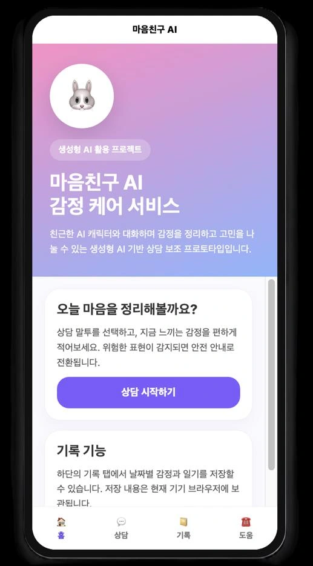

PROJECT 03 / 일상 · 대화형 AIPROJECT 03 / Everyday Life · Conversational AI
마음친구: AI 감정 케어 서비스Maeum Chingu (Mind Friend): AI Emotional Care Service
대화 상대의 말투를 선택하고 감정을 기록하는 웹 프로토타입을 만들었습니다.Built a web prototype for choosing the conversation partner's speaking style and logging emotions.
01 문제 상황 Problem
일상적인 감정과 고민을 편하게 표현하고 꾸준히 기록하기 어려운 사용자를 위해, 접근하기 쉬운 대화형 감정 기록 서비스를 기획했습니다. 사용자가 원하는 관계와 말투에 맞춘 응답을 제공하는 것이 핵심입니다.Designed an accessible conversational emotion-journaling service for users who find it hard to express everyday feelings and concerns comfortably and record them consistently. The core idea is to provide responses tailored to the relationship and tone the user prefers.
02 사용 모델과 데이터 Models and Data
모델·기술Models · Techniques
- Gemini API: 감정 대화 응답을 생성합니다.Gemini API: generates emotional conversation responses.
- 페르소나 프롬프트: 친구·선생님·상담사 유형에 따라 말투와 응답 방식을 조절합니다.Persona prompts: adjust tone and response style according to friend, teacher, or counselor personas.
데이터·입력Data · Inputs
- 사용자가 입력한 고민과 감정 기록, 대화 이력.User-entered concerns, emotion logs, and conversation history.
- AI-Hub 감성 대화 말뭉치의 약 27만 문장을 대화 설계 참고 자료로 활용했습니다. 해당 자료로 별도 모델을 학습했다는 근거는 확인되지 않았습니다.About 270,000 sentences from the AI-Hub emotional dialogue corpus were used as reference material for dialogue design. There is no evidence that a separate model was trained on this data.
03 구현 과정 Implementation
- 사용자가 대화 상대 유형을 고르고 감정이나 고민을 입력합니다.The user chooses a type of conversation partner and enters their feelings or concerns.
- 선택한 페르소나를 반영한 응답을 생성하고, 대화·감정 기록을 브라우저 저장소에 보관합니다.Generates responses reflecting the selected persona and stores conversation and emotion logs in browser storage.
- 위험 표현이 감지되면 일반 응답 대신 도움 정보를 안내하며, 캘린더에서 기록을 돌아볼 수 있게 구성합니다.When at-risk expressions are detected, it provides help information instead of a regular response, and a calendar lets users look back on their records.
04 핵심 결과 Key Results
- 홈, 대화, 감정 캘린더, 도움 안내를 연결한 모바일 중심 웹 화면을 구현했습니다.Implemented a mobile-first web interface linking the home screen, chat, emotion calendar, and help information.
- 페르소나에 따른 대화와 위험 키워드 대응을 서비스 흐름에 포함했습니다.Persona-based conversation and responses to risk keywords were included in the service flow.

05 한계와 발전 방향 Limitations and Next Steps
- 위험 대응은 키워드 중심이며, 다양한 문맥을 정확히 판별하는지에 대한 평가가 제시되지 않았습니다.Risk handling is keyword-based, and no evaluation of how accurately it discriminates across varied contexts was presented.
- 감정 기록 서비스의 프로토타입으로, 임상적 상담 효과나 치료 성능을 검증한 결과는 없습니다. 음성 기능과 전문 상담 연계는 향후 계획입니다.As a prototype emotion-journaling service, it has no validated results on clinical counseling effects or therapeutic performance. Voice features and referral to professional counseling are future plans.
자료: 발표자료. 제출 자료를 바탕으로 정리했으며, 결과는 해당 프로젝트의 구현·실험 범위에 해당합니다.Source: presentation slides. Summarized from the submitted materials; results reflect the scope of the project's implementation and experiments.